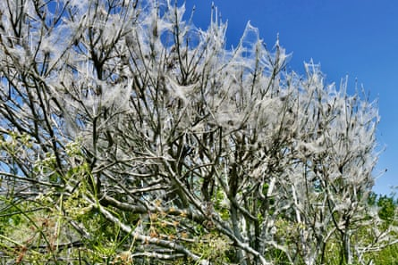
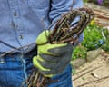

A ghost tree shines silver against the greenery of the hillside wood. Sheathed in silk from its trunk to the tips of its branches, this bird cherry has been completely defoliated by caterpillars. These are the overwintered larvae of bird cherry ermine moths , Yponomeuta evonymella , which, having spun their protective webbing, can devour the leaves, safe from blue tits and parasitic wasps, before pupating. Some weeks later, thousands of slender moths will emerge, their white wings speckled with tiny black dots.
Bird cherries abound in this valley. Fast-growing, often multi-trunked trees, one once stood by our boundary wall that had grown so tall it rocked in the winds, the movement of its roots bringing down the stonework. When it demolished the wall for the fifth time, we reluctantly had it felled in late winter before birds started nesting. As well as logs, this left a huge pile of brash.
Eerie-looking webbing covers the hedgerows. While they look like cobwebs, these huge silk sheets are actually nests spun by either bird-cherry ermine or hawk-moth caterpillars.Photograph: Geoffrey Swaine/Shutterstock
In another part of the garden, those same winter gales, pummelling down the valley from the west, had brought down a hazel hurdle. My husband decided to turn the bird cherry branches into a dead hedge, a wind-filtering wildlife habitat, practical barrier and cost-free fence.
‘My husband decided to turn the bird-cherry branches into a dead hedge.’Photograph: Susie White
Having driven in a double row of round wooden stakes, he laid horizontal lengths of bird cherry, interweaving them for solidity. Twisting and looping the most flexible branches, he pinned some vertically and, as the mass grew, interspersed it with heavier wood for weight. At 2ft wide, it absorbed a surprising amount of material that can be topped up with further prunings as it decomposes.
What he has made is beautiful to look at. The bark varies in colour from soft grey, speckled with lichens, to shiny, rich warm brown. A squirrel runs fluidly along the top, a wren forages in its density for tiny insects. The dead hedge is a shelter for mice and voles, beetles and bees, amphibians, fungi and mosses. It has made use of something that might otherwise have gone to waste. Meanwhile, on the hillside, the silver-wrapped ghost tree will recover, new leaves will grow before autumn and birds will distribute its seeds along the valley.